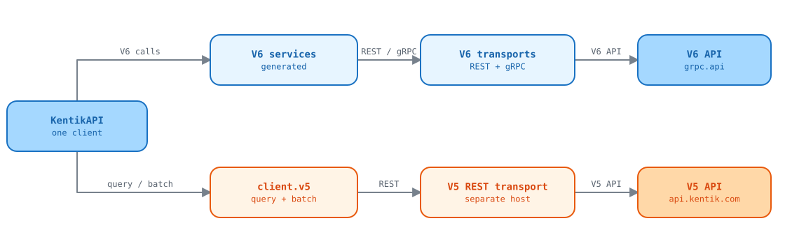

V5 (1.x) features compared with V6 (2.x)
This report lists what the V5 SDK on origin/main (last release v1.0.7)
gave users, and what the V6 SDK on feat/v6-sdk keeps, changes, or drops. It
was written on 2026-10-16 from git show origin/main:<path> and the
feat/v6-sdk working tree. The migration guide
already records some of these gaps for users.
Status values:
- Kept: V6 has the same capability, maybe under a new name.
- Partial: V6 has part of it, or needs a workaround.
- Missing: V6 has nothing for it.
Summary of losses, by user impact
| Rank | Loss | Why it matters | Can the SDK restore it? |
|---|---|---|---|
| 1 | Query API (query.sql, query.data, query.chart, query.url) and the analytics package |
It was the only way to pull flow and traffic data into scripts and pandas | Done in feature 005: client.v5.top_x_data, top_x_chart (not verified), query_url, and the analytics extra. sql is retired |
| 2 | Batch API for flow tags and populators | Bulk sync from a CMDB or IPAM becomes many single calls, which is slower and uses more quota | Done in feature 005: client.v5.batch_tags, batch_populators, batch_status, and the batch helpers in v5_tools |
| 3 | Automatic retry on 429, 502, 503, and 504 | Batch scripts recovered from rate limits without code. Now they fail | Yes, but retrying a write is unsafe. A caller-side retry on 429 is the safer design |
| 4 | Tolerance of unknown enum values (V5 ADR 0003) | A new enum value from the API now fails the whole call with a 502 until the SDK is regenerated | No. V6 keeps strict enum parsing. |
| 5 | Alert list and alert history semantics | Every alert-polling integration needs a rewrite | Yes. alerting.alert_list with states and startedAt returns cleared alerts (verified live) |
| 6 | Credential profiles and KTAPI_* variables |
Existing environments and ~/.kentik/<profile> files stop working |
Yes, with a small helper |
| 7 | DeviceCache |
Scripts that map device or interface names to objects or speeds must build their own lookup | Done in feature 005: kentik_api.devices.DeviceLookup, saved as JSON |
| 8 | User-Agent header and debug logging | Kentik loses SDK usage data, and users lose request traces | Yes, a few lines in the runtime |
| 9 | proxy= argument, SOCKS proxies, and custom hosts |
Private or staging Kentik hosts and SOCKS users have no client option | Yes, small changes to KentikAPI and APIConfig |
| 10 | Mutating examples and examples for 7 services | No copy-paste recipes for create, update, or delete | Yes, examples only |
Current request routing
V6 and V5 calls use separate transport paths. The V5 path supports the query and batch endpoints that have no V6 equivalent.

Open the interactive V5/V6 routing explorer to select a transport path and inspect its role and evidence.
Analytics support (kentik_api.analytics)
V5 path: kentik_api/analytics/ with mapped_query.py, flatness.py,
data_frame_cache.py, and a README. It shipped with the optional extra
kentik-api[analytics], which installed pandas, PyYAML, and fastparquet.
What it provided:
- Saved query definitions.
SQLQueryDefinitionandDataQueryDefinitionhold a query and a column mapping, written in Python or in a YAML file, with{start}and{end}placeholders. - Results as pandas DataFrames.
get_data(api, start=..., end=...)runs the query and returns a DataFrame. A top-X query returns one DataFrame for each bucket, and it can unpack the time series of each row. - A local cache.
DFCachestores DataFrames as parquet files by time range, fetches only the missing time steps, and removes duplicate rows. - Flat-traffic detection.
flatness_analysisusesDeviceCacheto get interface speeds, converts traffic to percent of link use, and reports time windows where outbound traffic on a link stayed flat. On a perimeter link, flat traffic suggests a bandwidth limit in a peer network.
Who used it: data scientists and network engineers who analyze flow data in notebooks or scheduled jobs.
What users lose: there is no way to get flow or traffic data through the SDK, as DataFrames or in any other form. The two analytics examples cannot be ported.
Why V6 does not have it: the analytics package called POST /api/v5/query/sql
and POST /api/v5/query/topXdata. The V6 schema publishes no query, SQL, or
top-X service. journeys.get_nlq converts a plain-English question to a query
object but does not run it.
What can be restored:
- The pandas-only parts (
DFCache,dedup_data_frame, the flatness statistics) do not call the API. They work on DataFrames from any source. - The query parts need a query endpoint. That needs either upstream schema work or a hand-written V5 query client outside the generator.
- If the YAML mapping is ported, remove the
@fixup:mapping type. It runseval()on text from the YAML file, which allows code injection.
The rate limiting guide still quotes a separate Query API limit from the Kentik Knowledge Base.
Live check of the V5 API (2026-10-16)
scripts/v5/live_probe.py sent read-only calls to
https://api.kentik.com with the project credentials. It prints status codes,
response shapes, and quota headers only. The
Admin APIs and
Query API pages of the Kentik
Knowledge Base mark V5 as deprecated, but list these endpoints.
| V5 endpoint | Result | V6 equivalent |
|---|---|---|
GET /users, /devices, /deviceLabels, /plans, /sites, /tags, /customdimensions, /saved-filters/custom |
200 | Yes: user, device, label, plan, site, flow_tag, custom_dimension, saved_filter |
GET /customApplications |
404 | Yes: custom_application |
GET /mykentik/tenants |
404 | Yes: mkp |
GET /alerts-active/alarms, /alerts-active/alerts-history |
200 | Yes: alerting.alert_list. A live call with states=[ALERT_STATE_CLEAR] and a 30-day startedAt returned 138 cleared alerts |
POST /alerts/manual-mitigate |
Not called (writes) | Yes: alerting.mitigations_create |
POST /query/topXdata and /api/next/v5/query/topXdata |
200, with results[].bucket and results[].data rows |
None |
POST /query/url |
200, a JSON string with a portal link | None |
POST /query/topXchart |
No response in 180 s, for SVG and PNG. A manual retest with the Knowledge Base example body also timed out, while topXdata answered the same body in 1.4 s |
None |
POST /query/sql |
403 Access Denied. The Knowledge Base says Kentik retired it on 2025-05-01 |
None |
GET /batch/<guid>/status |
404 Could not find this batch for an unknown ID, so the endpoint answers |
None |
POST /batch/tags, /batch/customdimensions/<name>/populators |
Not called (writes) | None. V6 device has bulk calls, but only for devices |
Other findings:
- V5 sends no
X-RateLimit-*headers. V6 sendsx-ratelimit-limit,x-ratelimit-remaining, andx-ratelimit-reset. So the SDK cannot report quota for a V5 call. - A query needs
device_nameeven whenall_selectedis true. Without it, the API returns 400The device_name is required. - V5 uses its own hosts:
https://api.kentik.com/api/v5(US) andhttps://api.kentik.eu/api/v5(EU). V6 REST usesgrpc.api.kentik.com. - A V6
alert_listcall withstates=[ALERT_STATE_ACTIVE]and astartedAtrange returned 400backend request error. Investigate before you document active-alert polling with a time filter.
Result: only the query (topXdata, url, and maybe topXchart) and batch
endpoints have no V6 equivalent. Every other V5 endpoint has one, so the SDK
maps those in the migration guide instead of adding them again.
API resources
Even where a row says Kept, the method names and the models changed. V5 hand-written classes became generated Pydantic models.
| V5 operation | V6 equivalent | Status |
|---|---|---|
sites.get_all, get, create, update, delete |
site.list_sites, get_site, create_site, update_site, delete_site |
Kept. Fields renamed (site_name to title, latitude to lat) |
devices.get_all, get, create, update, delete |
device.list_devices, get_device, create_device, update_device, delete_device |
Kept. V6 adds bulk calls and get_device_by_name |
devices.apply_labels |
device.update_labels |
Kept |
devices.interfaces.get_all(device_id) |
interface.list_interface with filters.deviceIds |
Partial. Interfaces are not nested under a device |
devices.interfaces.get, create, update, delete |
interface.interface_get, interface_create, interface_update, interface_delete |
Kept |
device_labels.get_all, create, update, delete |
label.list_labels, create_label, update_label, delete_label |
Kept |
device_labels.get |
None | Partial. List the labels and filter |
users.* |
user.list_users, get_user, create_user, update_user, delete_user |
Kept. V6 adds token and session reset |
tags.get_all |
flow_tag.search_flow_tag |
Partial. Page through the search |
tags.get, create, update, delete |
flow_tag.get_flow_tag, create_flow_tag, update_flow_tag, delete_flow_tag |
Kept |
saved_filters.* |
saved_filter.* |
Kept |
custom_dimensions.* and populators.* |
custom_dimension.* (get is get_info) |
Kept. V6 adds get_populator |
custom_applications.* |
custom_application.* |
Kept. V6 adds a get call |
plans.get_all |
plan.list_plans |
Kept |
my_kentik_portal.get_all, get, create_tenant_user, delete_tenant_user |
mkp.tenant_list, tenant_get, tenant_user_create, tenant_user_delete |
Kept. V6 adds tenant and package management |
alerting.create_manual_mitigation |
alerting.mitigations_create |
Kept, with a new model that uses platform and method IDs |
alerting.get_active_alerts |
alerting.alert_list |
Partial. Filters move into a request body with different semantics |
alerting.get_alerts_history |
alerting.alert_list with states and startedAt filters |
Kept. Verified live on 2026-10-16 |
batch.batch_operation_on_flow_tags, batch_operation_on_populators, get_status |
v5.batch_tags, batch_populators, batch_status |
Kept (feature 005), REST only |
query.data, query.chart, query.url |
v5.top_x_data, top_x_chart, query_url |
Kept (feature 005), REST only. top_x_chart not verified |
query.sql |
None | Missing. Kentik retired the endpoint on 2025-05-01 |
synthetics agents, tests, results, traces |
synthetics.* (v202309) |
Kept. private_only filtering moves to the caller |
cloud_export.get_all, get, create, update, delete |
cloud_export.* (v202506) |
Kept |
cloud_export.patch (field mask) |
None | Partial. Read, change, and write back the whole object |
V6 also adds 22 services that V5 never had, for example audit,
bgp_monitoring, capacity_plan, cost, credential, journeys, kmi,
notification_channel, and rbux.
Utilities (kentik_api.utils)
| V5 helper | What it provided | V6 status |
|---|---|---|
get_credentials, get_url, get_proxy |
Named JSON profiles in $KTAPI_CFG_FILE, $KTAPI_HOME/.kentik/<profile>, or ~/.kentik/<profile>, then the KTAPI_AUTH_EMAIL, KTAPI_AUTH_TOKEN, KTAPI_URL, and KTAPI_PROXY variables |
Partial. V6 reads arguments, then KENTIK_EMAIL and KENTIK_API_TOKEN, then a .env file. No profiles and no KTAPI_* names |
DeviceCache |
Loads all devices once, looks them up by ID or name, builds device:interface link names, returns link speeds, and saves to a pickle file |
Kept as kentik_api.devices.DeviceLookup (feature 005). Saves JSON, not pickle |
time_seq |
Yields datetimes in fixed steps for the analytics cache | Missing. Only useful with analytics |
If DeviceCache is restored, save to JSON, not pickle. Loading a pickle file
from an untrusted source runs code.
Connection behavior
| Behavior | V5 | V6 | Status |
|---|---|---|---|
| Auth headers | X-CH-Auth-Email, X-CH-Auth-API-Token |
Same headers, also on gRPC | Kept |
| Retries | 3 retries with backoff on 429, 502, 503, 504, for every method. Replaceable with retry_strategy= |
2 retries of a failed connection only. No retry after a response | Partial, by design: V6 never sends a write twice |
| Rate limits | RateLimitExceededError, usually absorbed by the retries |
HTTPException with status_code == 429 and a rate_limit attribute. Quota recorded per endpoint |
Changed. More information, no automatic backoff |
| Timeouts | Connect 10 s, read 60 s, REST only | timeout, rest_timeout, grpc_deadline, and with_timeout() per call |
Kept and improved |
| Proxy | proxy= argument or KTAPI_PROXY. SOCKS supported |
Standard proxy variables only. No SOCKS | Partial |
| Host | Any host through api_host= |
region="us" or "eu". A custom REST host only per call |
Partial |
| Logging | Debug log of each request | None | Missing |
| User-Agent | kentik_community_sdk_python/<version> |
Library default | Missing |
| Unknown enum values | Accepted (ADR 0003) | Rejected. The call raises HTTPException(502) |
Changed. Reliability risk |
Errors
| V5 | V6 |
|---|---|
KentikAPIError |
KentikError |
AuthError (401 and 403) |
AuthenticationError (401). A 403 is an HTTPException |
TimedOutError, UnavailabilityError, IntermittentError |
TransportError |
BadRequestError, NotFoundError, RateLimitExceededError, ProtocolError |
HTTPException with status_code, and a generated class for each operation |
DataFormatError, DeserializationError, IncompleteObjectError |
Pydantic validation, or HTTPException(502) for an unusable response |
V6 has no "safe to retry" base class like IntermittentError. Callers check
status_code instead.
Packaging, imports, and tooling
| Item | V5 | V6 | Status |
|---|---|---|---|
| Package name | kentik-api |
kentik-api |
Kept. Users who do not pin <2 get the breaking upgrade |
| Python | 3.8 and later | 3.12 and later | Changed. Users on 3.8 to 3.11 cannot install 2.x |
Extra [analytics] |
pandas, PyYAML, fastparquet | pandas, pyarrow, PyYAML | Kept (feature 005) |
py.typed |
No | Yes | Added |
from kentik_api import KentikAPI |
Works | Works, new keyword arguments | Kept |
kentik_api.public.*, kentik_api.utils, kentik_api.analytics, kentik_api.api_calls |
Public modules | ModuleNotFoundError |
Missing. Models are in kentik_api.gen.<service>.models |
Model and error imports from kentik_api |
Device, Site, AuthError, and others |
ImportError. Top level exports KentikAPI, RateLimit, rate_limit_of |
Changed |
__version__ |
Yes | No | Missing |
| CI | Format, mypy, and unit tests; one wheel per Python version; twine upload | Tests on 3.12 to 3.14, type check, lint, changelog gate, drift check, docs build, clean-venv wheel test, trusted publishing, weekly schema sync | Kept and expanded |
| Tests | About 254 functions, including real create and delete for synthetics and cloud export | About 3,470 mocked cases and 470 opt-in read-only e2e cases | Kept and expanded. The e2e layer no longer creates or deletes anything |
ADRs (docs/adr/) |
Three Nygard-style records | None. Decisions live in CLAUDE.md, CONTEXT.md, and specs/ |
Replaced. ADR 0002 (one ID type) and ADR 0003 (permissive enums) are reversed |
Examples
V5 examples ran full create, update, and delete cycles. V6 examples only list resources, on REST and gRPC.
| V5 example | V6 status |
|---|---|
sites_example.py, devices_example.py, labels_example.py, users_example.py, synthetics_example.py, alerting_example.py |
Partial. A list-only version exists in examples/<service>/ |
error_handling_example.py |
Kept as examples/common/error_handling.py |
applications_example.py, dimensions_example.py, tags_example.py, saved_filters_example.py, plans_example.py, my_kentik_portal_example.py, cloud_export_example.py |
Missing. The services exist, but no example |
bulk_user_create.py (users from a YAML file) |
Missing |
batch_example.py, queries_example.py, analytics_example_topx.py |
Kept as examples/v5/ (feature 005) |
analytics_example_sql.py, demos/queries_visualisation_demo.ipynb |
Missing. The SQL endpoint is retired, and the notebook is out of scope |
Recommended follow-up
- Done: Kentik confirmed that the V5 query and batch endpoints still answer
and that a V6 query service is planned. The live check above confirms it,
except for
query/sql(retired) andquery/topXchart(no response). Feature 005 (specs/005-v5-query-batch/) covers the rest. - Accept unknown enum values in response models, as V5 did, so that a new value from the API does not fail calls.
- Add a User-Agent header and debug logging to
request_json()andcall_grpc(). - Add a documented caller-side retry recipe for 429 to the rate limiting
guide, using
exc.rate_limit. - Decide whether to add small helpers: credential profiles,
DeviceCache(JSON, not pickle), aproxy=argument, and a custom host. - Add create, update, and delete examples, and examples for the 7 services that have none.